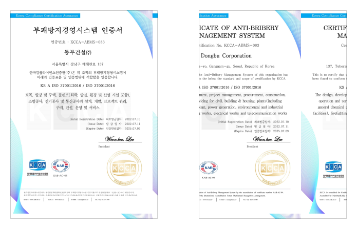
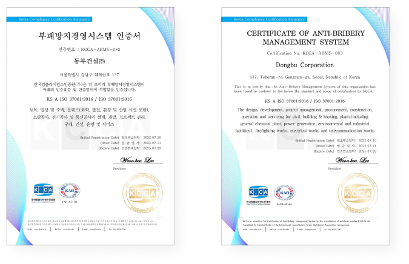

Governance
In 2022, Dongbu Corporation obtained ISO37001 certification of the Anti-bribery
management system legislated by ISO in cooperation with Transparency International and OECD to prevent corruption occurring in the organization.
We will continue to take the lead in addressing relevant risks of violation of laws and trust of stakeholders by enhancing governance transparency.

